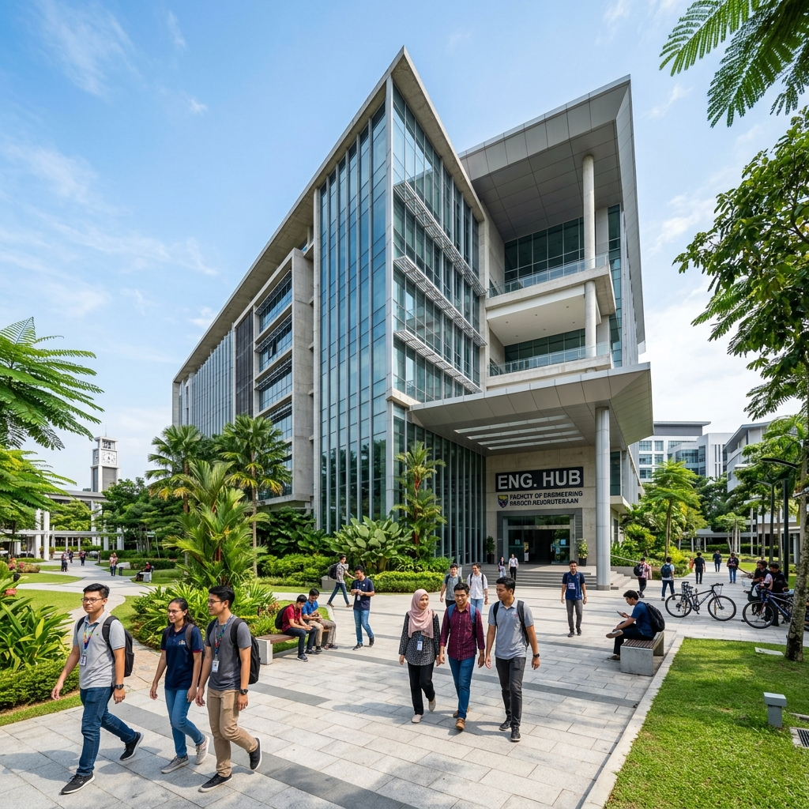

Infrastructure University Kuala Lumpur (IUKL) is Malaysia's first infrastructure university, emphasizing the integration of both hard and soft aspects of infrastructure. It provides top-notch education across various fields, particularly excelling in Civil Engineering, Architecture, and Built Environment.
The university is committed to providing a well-rounded education, equipping students with not only academic excellence but also strong practical skills and ethical values for the workforce.
